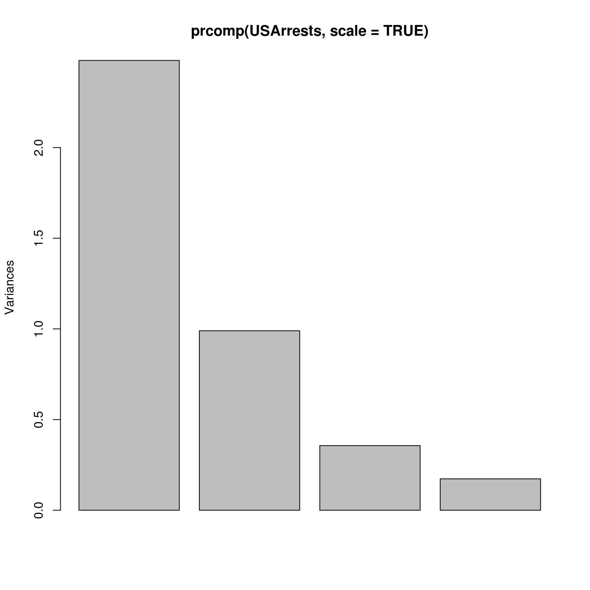
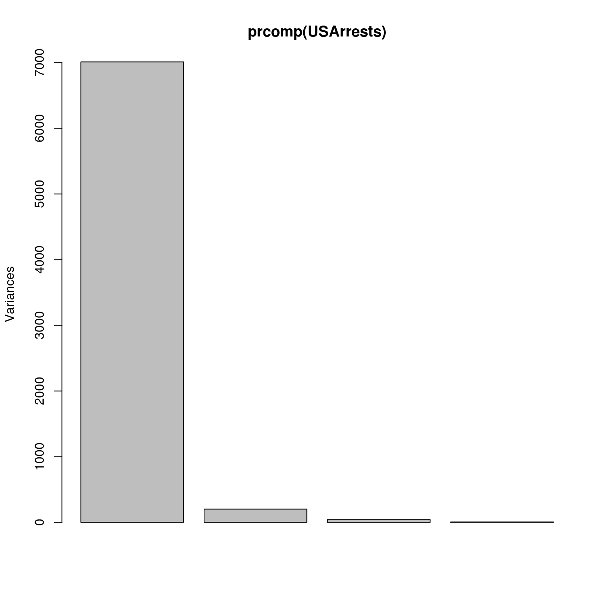
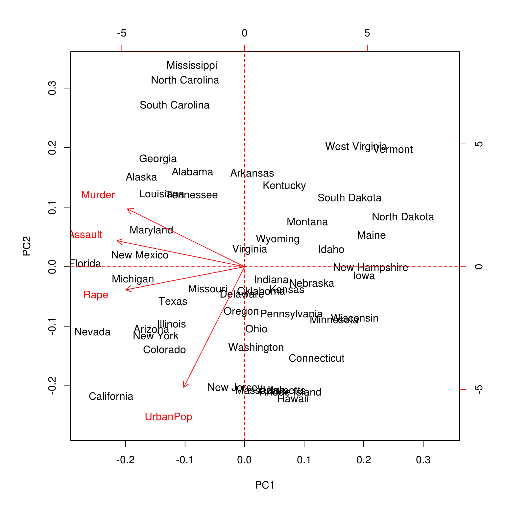
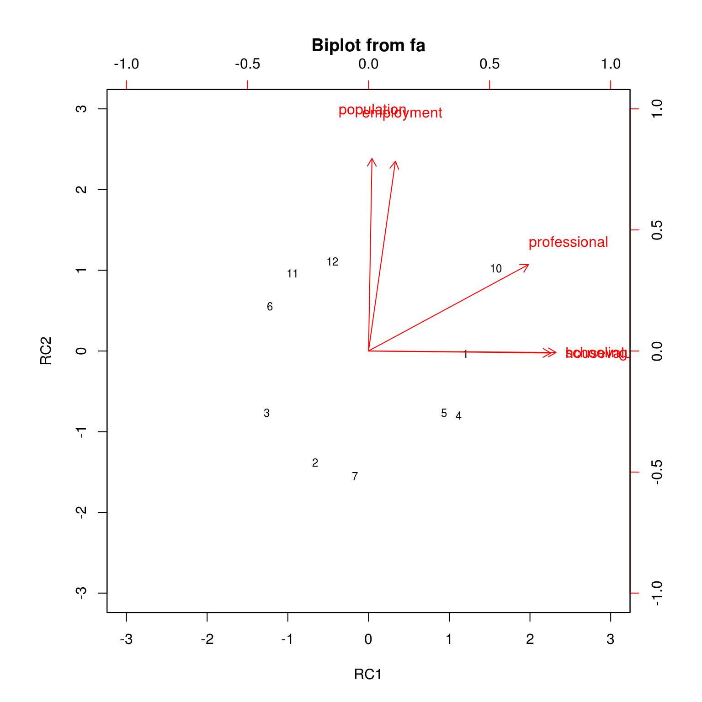

Capítulo 4 Análise de Componentes Principais
É uma alternativa à Análise Fatorial (FA), apesar dos objetivos serem semelhantes (PCA e FA), na PCA se busca obter o modelo descritivo dos dados enquanto na FA se busca o modelo estrutural.
Outro destaque importante é que a matriz/vetor de cargas “loadings” possuírem valores equivalentes, na FA estes são menores. Isto ocorre porque na PCA é ajustado um modelo para a variância completa da matriz de correlação das variáveis e na FA o processo é realizado somente para a variância comum.
Nesta seção serão utilizados as seguinte bibliotecas do R.
autoLib('psych')## Loading required package: psych## psych
## TRUEknitr::opts_knit$set(fig.width=5, fig.height=5, fig.align='center')4.1 Métodos de cálculo
O cálculo de componentes principais pode ser feito, em geral, de duas formas:
- princomp ou principal(psych): Autovalor/Autovetor
- prcomp: decomposição SVD
A documentação do R indica o uso da função prcomp por apresentar melhor precisão numérica (por causa do método). Já a função principal(psych) apresenta resultados mais detalhados.
De forma geral, o que ocorre é a construção de novas variáveis (fatores) que são a combinação linear entre as variáveis originais mas apresentam certas qualidades de interesse, como por exemplo a independência entre os novos fatores e que estes representam a maior variação possível.
Pode-se dizer que as novas variáveis ou fatores, formam uma rotação (ou projeção) em um novo conjunto de eixos. As direções são escolhidas com base na máxima variabilidade observada.
No final do processo, tem-se variáveis independentes entre si e que explicam uma porção da variação inicial dos dados. Geralmente, 2 ou 3 componentes são suficientes para exlicar mais que \(80\%\) da variação total.
4.2 Exemplo da função prcomp
## Variáveis na escala original, inapropriado
prcomp(USArrests) ## Standard deviations:
## [1] 83.732400 14.212402 6.489426 2.482790
##
## Rotation:
## PC1 PC2 PC3 PC4
## Murder 0.04170432 -0.04482166 0.07989066 -0.99492173
## Assault 0.99522128 -0.05876003 -0.06756974 0.03893830
## UrbanPop 0.04633575 0.97685748 -0.20054629 -0.05816914
## Rape 0.07515550 0.20071807 0.97408059 0.07232502## Variáveis trasnformadas para eliminar efeito de diferença
## entre escala/medida
prcomp(USArrests, scale = TRUE)## Standard deviations:
## [1] 1.5748783 0.9948694 0.5971291 0.4164494
##
## Rotation:
## PC1 PC2 PC3 PC4
## Murder -0.5358995 0.4181809 -0.3412327 0.64922780
## Assault -0.5831836 0.1879856 -0.2681484 -0.74340748
## UrbanPop -0.2781909 -0.8728062 -0.3780158 0.13387773
## Rape -0.5434321 -0.1673186 0.8177779 0.08902432## é possível escolher apenas algumas variávies de interesse
prcomp(~ Murder + Assault + Rape, data = USArrests, scale = TRUE)## Standard deviations:
## [1] 1.5357670 0.6767949 0.4282154
##
## Rotation:
## PC1 PC2 PC3
## Murder -0.5826006 0.5339532 -0.6127565
## Assault -0.6079818 0.2140236 0.7645600
## Rape -0.5393836 -0.8179779 -0.1999436## gráfico para escolher o número de componentes
screeplot(prcomp(USArrests, scale = TRUE))
## outro gráfico com a representação da variância explicada por
## cada fator
plot(prcomp(USArrests))
## sumário com os valores explicados e variância total acumulada
summary(prcomp(USArrests, scale = TRUE))## Importance of components:
## PC1 PC2 PC3 PC4
## Standard deviation 1.5749 0.9949 0.59713 0.41645
## Proportion of Variance 0.6201 0.2474 0.08914 0.04336
## Cumulative Proportion 0.6201 0.8675 0.95664 1.00000## gráfico biplot
biplot(prcomp(USArrests, scale = TRUE))
abline(v=0,h=0,col="red", lty=2)
4.3 Exemplo da função principal(psych)
#Four principal components of the Harman 24 variable problem
#compare to a four factor principal axes solution using factor.congruence
# Calcula o PCA com rotação varimax
pc0 <- principal(Harman74.cor$cov,4,rotate="varimax")
# Calcula o PCA sem rotação (similar prcomp)
pc1 <- principal(Harman74.cor$cov,4,rotate="none")
# resultado do pc0
print(pc0)## Principal Components Analysis
## Call: principal(r = Harman74.cor$cov, nfactors = 4, rotate = "varimax")
## Standardized loadings (pattern matrix) based upon correlation matrix
## RC1 RC3 RC2 RC4 h2 u2 com
## VisualPerception 0.16 0.71 0.23 0.14 0.60 0.40 1.4
## Cubes 0.09 0.59 0.08 0.03 0.37 0.63 1.1
## PaperFormBoard 0.14 0.66 -0.04 0.11 0.47 0.53 1.2
## Flags 0.25 0.62 0.09 0.03 0.45 0.55 1.4
## GeneralInformation 0.79 0.15 0.22 0.11 0.70 0.30 1.3
## PargraphComprehension 0.81 0.18 0.07 0.21 0.73 0.27 1.2
## SentenceCompletion 0.85 0.15 0.15 0.06 0.77 0.23 1.1
## WordClassification 0.64 0.31 0.24 0.11 0.57 0.43 1.8
## WordMeaning 0.84 0.16 0.06 0.19 0.78 0.22 1.2
## Addition 0.18 -0.13 0.83 0.12 0.76 0.24 1.2
## Code 0.18 0.05 0.63 0.37 0.57 0.43 1.8
## CountingDots 0.02 0.17 0.80 0.05 0.67 0.33 1.1
## StraightCurvedCapitals 0.18 0.41 0.62 0.03 0.59 0.41 1.9
## WordRecognition 0.23 -0.01 0.06 0.68 0.52 0.48 1.2
## NumberRecognition 0.12 0.08 0.05 0.67 0.48 0.52 1.1
## FigureRecognition 0.06 0.46 0.05 0.58 0.55 0.45 1.9
## ObjectNumber 0.14 0.01 0.24 0.68 0.54 0.46 1.4
## NumberFigure -0.02 0.32 0.40 0.50 0.51 0.49 2.7
## FigureWord 0.14 0.25 0.20 0.42 0.30 0.70 2.4
## Deduction 0.43 0.43 0.09 0.30 0.47 0.53 2.8
## NumericalPuzzles 0.18 0.42 0.50 0.17 0.49 0.51 2.5
## ProblemReasoning 0.42 0.41 0.13 0.29 0.45 0.55 3.0
## SeriesCompletion 0.42 0.52 0.25 0.20 0.55 0.45 2.7
## ArithmeticProblems 0.40 0.14 0.55 0.26 0.55 0.45 2.5
##
## RC1 RC3 RC2 RC4
## SS loadings 4.16 3.31 3.22 2.74
## Proportion Var 0.17 0.14 0.13 0.11
## Cumulative Var 0.17 0.31 0.45 0.56
## Proportion Explained 0.31 0.25 0.24 0.20
## Cumulative Proportion 0.31 0.56 0.80 1.00
##
## Mean item complexity = 1.7
## Test of the hypothesis that 4 components are sufficient.
##
## The root mean square of the residuals (RMSR) is 0.06
##
## Fit based upon off diagonal values = 0.97# resultado do pc1
print(pc1)## Principal Components Analysis
## Call: principal(r = Harman74.cor$cov, nfactors = 4, rotate = "none")
## Standardized loadings (pattern matrix) based upon correlation matrix
## PC1 PC2 PC3 PC4 h2 u2 com
## VisualPerception 0.62 -0.01 0.43 -0.20 0.60 0.40 2.0
## Cubes 0.40 -0.08 0.40 -0.20 0.37 0.63 2.5
## PaperFormBoard 0.44 -0.19 0.48 -0.11 0.47 0.53 2.4
## Flags 0.51 -0.18 0.33 -0.22 0.45 0.55 2.4
## GeneralInformation 0.69 -0.32 -0.34 -0.05 0.70 0.30 1.9
## PargraphComprehension 0.69 -0.42 -0.27 0.08 0.73 0.27 2.0
## SentenceCompletion 0.68 -0.42 -0.36 -0.07 0.77 0.23 2.3
## WordClassification 0.69 -0.24 -0.14 -0.12 0.57 0.43 1.4
## WordMeaning 0.69 -0.45 -0.29 0.08 0.78 0.22 2.1
## Addition 0.47 0.54 -0.45 -0.20 0.76 0.24 3.2
## Code 0.58 0.43 -0.21 0.03 0.57 0.43 2.2
## CountingDots 0.48 0.55 -0.13 -0.34 0.67 0.33 2.8
## StraightCurvedCapitals 0.62 0.28 0.04 -0.37 0.59 0.41 2.1
## WordRecognition 0.45 0.09 -0.06 0.56 0.52 0.48 2.0
## NumberRecognition 0.42 0.14 0.08 0.53 0.48 0.52 2.1
## FigureRecognition 0.53 0.09 0.39 0.33 0.55 0.45 2.6
## ObjectNumber 0.49 0.28 -0.05 0.47 0.54 0.46 2.6
## NumberFigure 0.54 0.39 0.20 0.15 0.51 0.49 2.3
## FigureWord 0.48 0.14 0.12 0.19 0.30 0.70 1.7
## Deduction 0.64 -0.19 0.13 0.07 0.47 0.53 1.3
## NumericalPuzzles 0.62 0.23 0.10 -0.20 0.49 0.51 1.6
## ProblemReasoning 0.64 -0.15 0.11 0.06 0.45 0.55 1.2
## SeriesCompletion 0.71 -0.10 0.15 -0.10 0.55 0.45 1.2
## ArithmeticProblems 0.67 0.20 -0.23 -0.06 0.55 0.45 1.4
##
## PC1 PC2 PC3 PC4
## SS loadings 8.14 2.10 1.69 1.50
## Proportion Var 0.34 0.09 0.07 0.06
## Cumulative Var 0.34 0.43 0.50 0.56
## Proportion Explained 0.61 0.16 0.13 0.11
## Cumulative Proportion 0.61 0.76 0.89 1.00
##
## Mean item complexity = 2.1
## Test of the hypothesis that 4 components are sufficient.
##
## The root mean square of the residuals (RMSR) is 0.06
##
## Fit based upon off diagonal values = 0.97# Calcula PCA para conjunto Harman.5, 2 fatores e rotação varimax
pc2 <- principal(Harman.5,2,rotate="varimax")
pc2## Principal Components Analysis
## Call: principal(r = Harman.5, nfactors = 2, rotate = "varimax")
## Standardized loadings (pattern matrix) based upon correlation matrix
## RC1 RC2 h2 u2 com
## population 0.02 0.99 0.99 0.012 1.0
## schooling 0.94 -0.01 0.89 0.115 1.0
## employment 0.14 0.98 0.98 0.021 1.0
## professional 0.83 0.45 0.88 0.120 1.5
## housevalue 0.97 -0.01 0.94 0.062 1.0
##
## RC1 RC2
## SS loadings 2.52 2.15
## Proportion Var 0.50 0.43
## Cumulative Var 0.50 0.93
## Proportion Explained 0.54 0.46
## Cumulative Proportion 0.54 1.00
##
## Mean item complexity = 1.1
## Test of the hypothesis that 2 components are sufficient.
##
## The root mean square of the residuals (RMSR) is 0.03
## with the empirical chi square 0.29 with prob < 0.59
##
## Fit based upon off diagonal values = 1# compare these correlations to the loadings
# do it for unstandardized scores, and transform obliquely
round(cor(Harman.5,pc2$scores),2) ## RC1 RC2
## population 0.02 0.99
## schooling 0.94 -0.01
## employment 0.14 0.98
## professional 0.83 0.45
## housevalue 0.97 -0.01pc2o <- principal(Harman.5,2,rotate="promax",covar=TRUE)
pc2o## Principal Components Analysis
## Call: principal(r = Harman.5, nfactors = 2, rotate = "promax", covar = TRUE)
## Unstandardized loadings (pattern matrix) based upon covariance matrix
## RC1 RC2 h2 u2 H2 U2
## population -40.1 3440.30 1.2e+07 6.7e+03 1.00 5.7e-04
## schooling 1.5 -0.01 2.4e+00 8.1e-01 0.75 2.5e-01
## employment 110.3 1210.10 1.5e+06 5.4e+04 0.96 3.5e-02
## professional 87.7 48.30 1.0e+04 2.9e+03 0.78 2.2e-01
## housevalue 6368.4 -23.16 4.1e+07 2.2e+01 1.00 5.4e-07
##
## RC1 RC2
## SS loadings 40571924.73 13297286.79
## Proportion Var 0.75 0.25
## Cumulative Var 0.75 1.00
## Proportion Explained 0.75 0.25
## Cumulative Proportion 0.75 1.00
##
## Standardized loadings (pattern matrix)
## item RC1 RC2 h2 u2
## population 1 -0.01 1.00 1.00 5.7e-04
## schooling 2 0.86 -0.01 0.75 2.5e-01
## employment 3 0.09 0.97 0.96 3.5e-02
## professional 4 0.76 0.42 0.78 2.2e-01
## housevalue 5 1.00 0.00 1.00 5.4e-07
##
## RC1 RC2
## SS loadings 3.76 1.23
## Proportion Var 0.75 0.25
## Cumulative Var 0.75 1.00
## Cum. factor Var 0.75 1.00
##
## With component correlations of
## RC1 RC2
## RC1 1.00 0.04
## RC2 0.04 1.00
##
## Mean item complexity = 1.1
## Test of the hypothesis that 2 components are sufficient.
##
## The root mean square of the residuals (RMSR) is 6040.31
## with the empirical chi square 8756488842 with prob < 0
##
## Fit based upon off diagonal values = 1round(cov(Harman.5,pc2o$scores),2) ## RC1 RC2
## population 89.53 3438.79
## schooling 1.54 0.05
## employment 155.90 1214.25
## professional 89.56 51.60
## housevalue 6367.49 216.72pc2o$Structure #this matches the covariances with the scores## RC1 RC2
## population 89.532324 3.438787e+03
## schooling 1.542246 4.714838e-02
## employment 155.900367 1.214255e+03
## professional 89.559504 5.160112e+01
## housevalue 6367.487506 2.167238e+02biplot(pc2,main="Biplot of the Harman.5 socio-economic variables",labels=paste0(1:12))